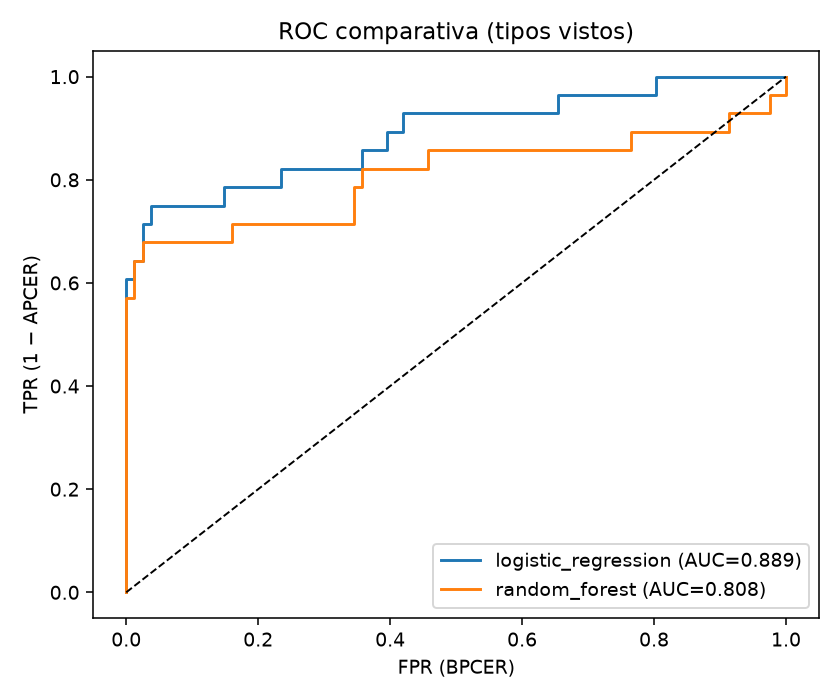

Detecção de fraude em documentos de identidade com o dataset FREUID 2026. Da escolha dos dados ao resultado no Egito e em Moçambique.
O que a prova pede
1 · Dataset
Conselho, benefício e concurso conferem uma identidade antes de abrir o cadastro. O dataset traz a foto do documento e a resposta: legítimo ou fraude.
2 · Serve para IA?
D = { ( x , y ) }
O JPEG do documento. No nosso código ele vira 64 números: histograma de cor, brilho e gradiente das bordas. Sem esses números, a regressão logística não tem o que somar.
0 é legítimo. 1 é fraude. O modelo vê a resposta no treino e, no teste, só recebe a foto. Isso é classificação binária supervisionada, o caso da aula, não regressão.
3 · Análise exploratória
Contagem feita em train_labels.csv, nas 69.352 linhas, antes de baixar qualquer foto.
3 · Análise exploratória · eda.py
value_counts agrupa as linhas pelo rótulo. sort_index deixa o 0 antes do 1. A porcentagem é o tamanho da classe dividido pelas 69.352 linhas.
full = pd.read_csv(DATA / "train_labels.csv")
vc = full["label"].value_counts().sort_index()
for k, n in vc.items():
pct = 100 * n / len(full)
print(k, f"{n:,}", f"{pct:.1f}%")
3 · Análise exploratória
A largura da barra acompanha o total de imagens. Fonte: train_labels.csv.
Cada documento tem cerca de 8.000 legítimos. Só o Egito chega perto de metade fraude, com cerca de 2.500 fraudes a mais que os outros.
Por isso o teste deixa um país inteiro de fora. Se o modelo só decorar o Egito, Moçambique denuncia.
3 · Análise exploratória
4 · Pipeline
CSV de rótulos e as 544 fotos que existem na pasta.
Cada JPEG vira 128×128 e depois 64 números.
Moçambique fica de fora. O Egito vira o teste.
fit só nas 394 linhas de treino. Dois modelos.
Corte 0,5, matriz, ROC e o score da competição.
score = model.predict_proba(X)[:, 1] # chance de fraude pred = (score >= 0.5).astype(int) # classe no corte 0,5
4 · Pipeline · features.py
A logística não recebe pixel. extract_one abre o JPEG, força RGB, reduz para 128×128 e junta cor com borda.
def extract_one(path, size=128):
with Image.open(path) as im:
im = im.convert("RGB").resize(
(size, size), Image.BILINEAR
)
arr = np.asarray(im)
return np.concatenate([
_hist_features(arr),
_stat_features(arr),
])
def _hist_features(arr, bins=16):
feats = []
for c in range(3): # R, G, B
h, _ = np.histogram(
arr[:, :, c], bins=bins,
range=(0, 256), density=True,
)
feats.append(h)
return np.concatenate(feats)
4 · Pipeline
O último tipo em ordem alfabética, Moçambique, sai do treino por completo. Entre os outros, groups=type manda um país inteiro para o teste. Com a semente 42, esse país foi o Egito.
heldout = sorted(types)[-1]
# MOZAMBIQUE/DL → teste OOD
GroupShuffleSplit(
test_size=0.2,
random_state=42,
# groups = type
)
Sortear foto por foto deixaria o mesmo documento no treino e no teste. O modelo decoraria a carteira, não a fraude. Egito mede se funciona num documento novo. Moçambique mede se funciona num país que ele nunca viu.
4 · Pipeline
Pipeline([
("scaler", StandardScaler()),
("clf", LogisticRegression(
max_iter=2000,
class_weight="balanced",
random_state=42,
)),
])
O scaler usa média e desvio só do treino. A sigmoide transforma a soma dos 64 números numa chance entre 0 e 1.
RandomForestClassifier(
n_estimators=300,
max_depth=20,
min_samples_leaf=2,
class_weight="balanced_subsample",
random_state=42,
)
300 árvores votam. Cada uma pergunta se um dos 64 números passou de um corte. Sem scaler: a árvore não depende da escala.
5 · Resultados · Egito, 109 fotos
Acurácia 0,71 · revocação da fraude 0,82
Acurácia 0,82 · revocação da fraude 0,68
5 · Resultados

ROC no Egito. A diagonal é o chute. AUC 0,50 seria sorteio.
| modelo | teste | AUC | acurácia | revocação | score |
|---|---|---|---|---|---|
| logística | Egito | 0,889 | 0,71 | 0,82 | 0,279 |
| floresta | Egito | 0,808 | 0,82 | 0,68 | 0,331 |
| logística | Moçambique | 0,687 | 0,51 | 1,00 | 1,000 |
| floresta | Moçambique | 0,691 | 0,51 | 1,00 | 0,582 |
O score da competição é menor quanto melhor. Revocação 1,00 em Moçambique não é vitória: a acurácia 0,51 mostra que os dois passaram a chamar quase tudo de fraude.
5 · Resultados · metric.py
A competição não usa a acurácia. Ela junta o AUC com a fraude ainda pega quando no máximo 1% dos legítimos é barrado. O número publicado é 1 menos a média harmônica. Menor é melhor.
auc = roc_auc_score(y_true, y_score) fpr, tpr, _ = roc_curve(y_true, y_score) tpr_at_1 = tpr[fpr <= 0.01].max() harm = 2 * auc * tpr_at_1 / (auc + tpr_at_1) score = 1 - harm
6 · Otimização
7 · Artigo · mínimo de 10 páginas
IEEEtran, duas colunas, formato de periódico. O arquivo da disciplina é o template oficial de Michael Shell.
Conclusão
Tem X, tem Y e o problema é de gestão pública. 57,7% legítimo e 42,3% fraude, sem pessoa real.
AUC 0,89 na logística e 0,81 na floresta. A logística deixa passar menos fraude. A floresta gera menos alarme falso.
Em Moçambique a acurácia vai a 0,51. Cor e borda aprenderam os documentos do treino. O artigo precisa dizer isso com essa clareza.
setas ou espaço · F tela cheia